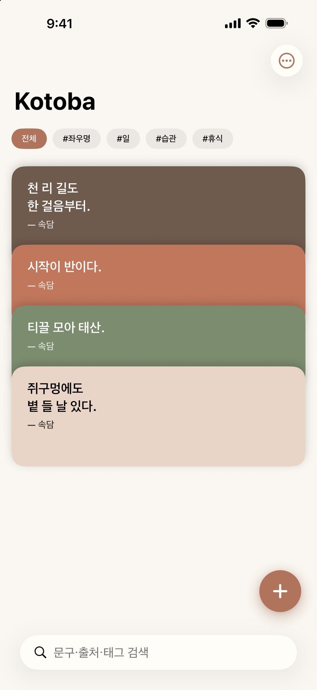
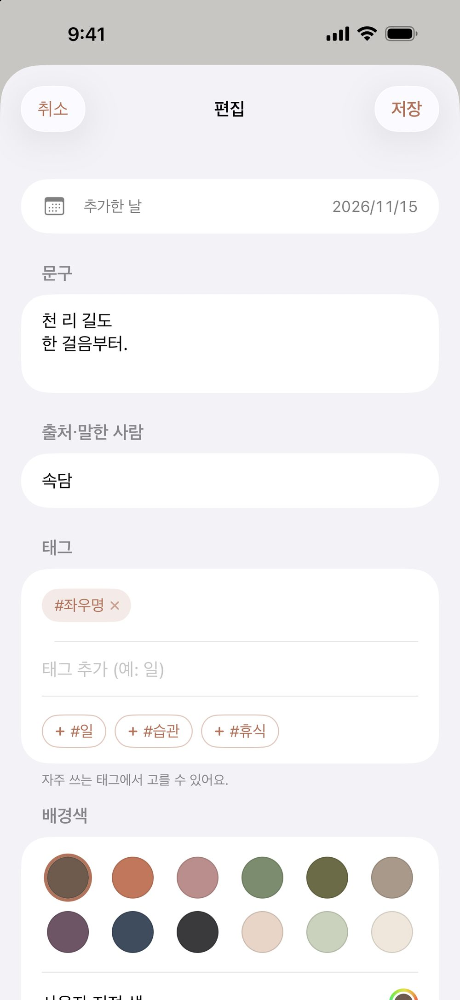

Kotoba는 나만의 문구 사전입니다. 마음에 남은 한 줄을 모아 두고, 그중 하나를 위젯으로 고정하세요.

스크롤하는 피드가 아니라, 내가 고른 한 문구가 늘 보는 자리에서 기다립니다.
문구 하나를 위젯에 고정 — 홈 화면 작게・중간・크게, 잠금 화면 3가지. 위젯을 탭하면 그 문구가 앱에서 열립니다.
문구를 출처, 태그, 배경색과 함께 저장. 태그로 거르기, 키워드로 검색.

광고 없음. 알림 없음. 계정 없음.
한 번만 결제, 구독 아님.
한도에 닿아도 이미 저장한 문구는 절대 지워지지 않습니다. 새로 추가하는 것만 멈춥니다.
No ads, no subscriptions. Pro is a one-time purchase.
알림 없음. 계정 없음. 광고 없음.
English · 日本語 · 简体中文 · 繁體中文 · 한국어 · Deutsch · Français · Español · Italiano · Nederlands · Polski · Português · Русский · ไทย · Türkçe · Українська · Tiếng Việt · Bahasa Indonesia